We will have a look at the Carseats data using the tree, rpart, and party packages in R, as in the lab in the book. We create a binary response variable High (for high sales), and we include it in the same dataframe.
library(ISLR)
attach(Carseats)
hist(Sales)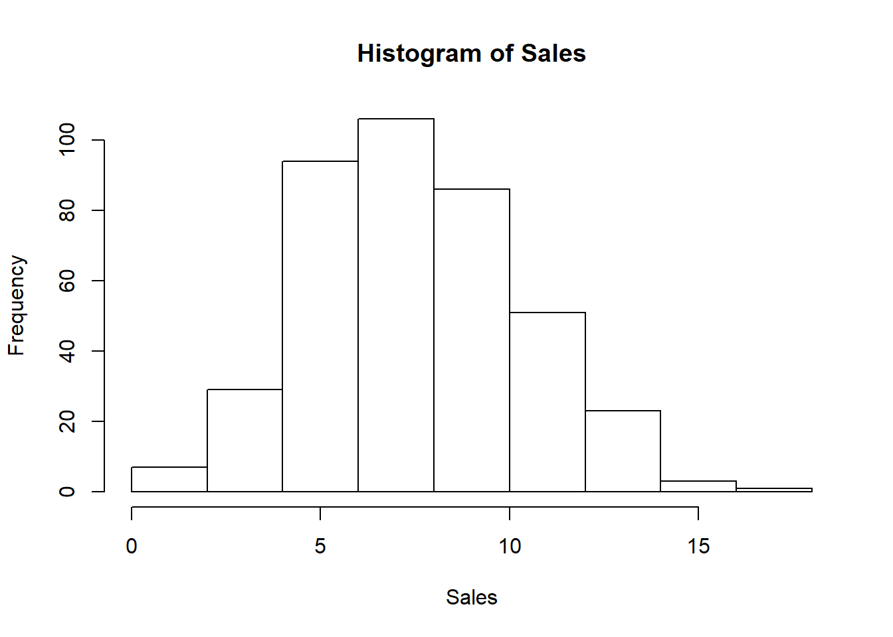
Now we fit a tree to these data, and summarize and plot it. Notice that we have to exclude Sales from the right-hand side of the formula, because the response is derived from it.
library(rpart)
High <- ifelse(Sales <= 8, "No", "Yes")
Carseats <- data.frame(Carseats, High)
tree.carseats <- rpart(High~.-Sales, data = Carseats)plot(tree.carseats, uniform = TRUE)
text(tree.carseats, pretty=1)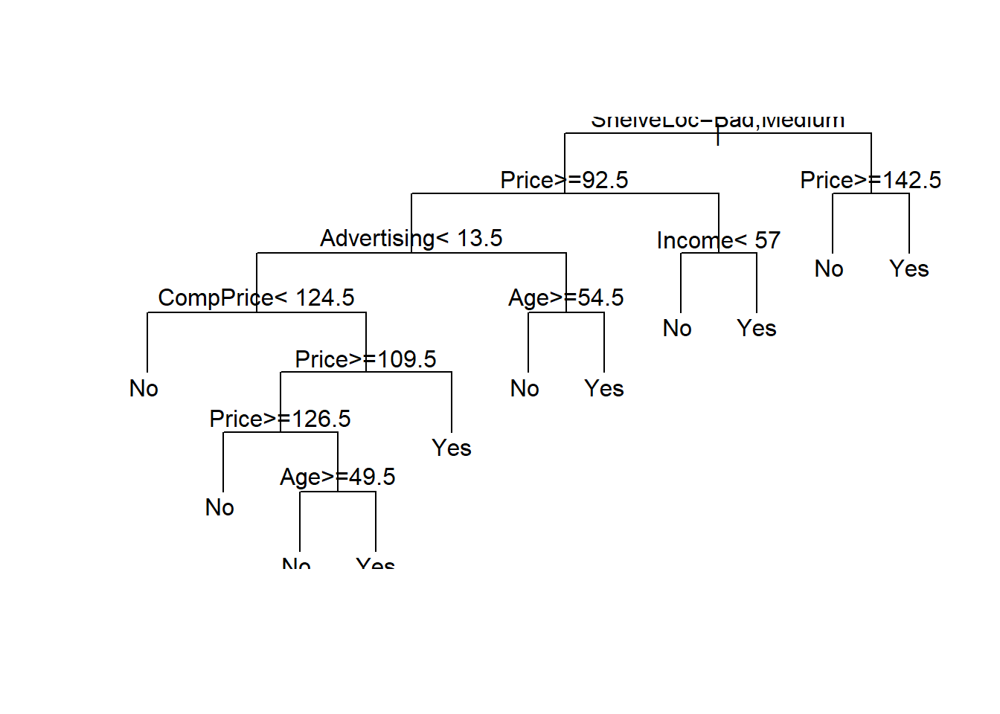
library(party)
tree_carseats <- ctree(High~.-Sales, data = Carseats)
plot(tree_carseats)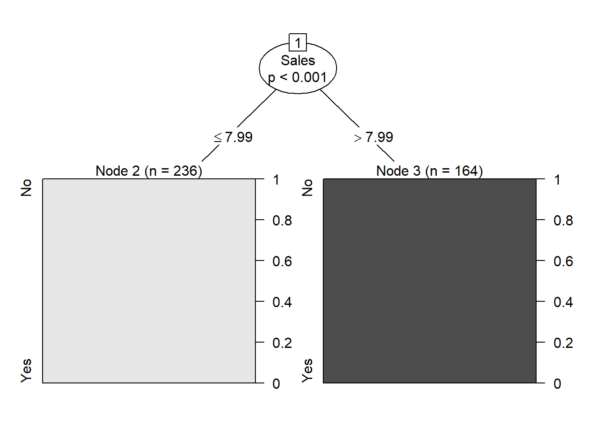
summary(tree_carseats)## Length Class Mode
## 1 BinaryTree S4For a detailed summary of the tree, print it:
tree.carseats## n= 400
##
## node), split, n, loss, yval, (yprob)
## * denotes terminal node
##
## 1) root 400 164 No (0.59000000 0.41000000)
## 2) ShelveLoc=Bad,Medium 315 98 No (0.68888889 0.31111111)
## 4) Price>=92.5 269 66 No (0.75464684 0.24535316)
## 8) Advertising< 13.5 224 41 No (0.81696429 0.18303571)
## 16) CompPrice< 124.5 96 6 No (0.93750000 0.06250000) *
## 17) CompPrice>=124.5 128 35 No (0.72656250 0.27343750)
## 34) Price>=109.5 107 20 No (0.81308411 0.18691589)
## 68) Price>=126.5 65 6 No (0.90769231 0.09230769) *
## 69) Price< 126.5 42 14 No (0.66666667 0.33333333)
## 138) Age>=49.5 22 2 No (0.90909091 0.09090909) *
## 139) Age< 49.5 20 8 Yes (0.40000000 0.60000000) *
## 35) Price< 109.5 21 6 Yes (0.28571429 0.71428571) *
## 9) Advertising>=13.5 45 20 Yes (0.44444444 0.55555556)
## 18) Age>=54.5 20 5 No (0.75000000 0.25000000) *
## 19) Age< 54.5 25 5 Yes (0.20000000 0.80000000) *
## 5) Price< 92.5 46 14 Yes (0.30434783 0.69565217)
## 10) Income< 57 10 3 No (0.70000000 0.30000000) *
## 11) Income>=57 36 7 Yes (0.19444444 0.80555556) *
## 3) ShelveLoc=Good 85 19 Yes (0.22352941 0.77647059)
## 6) Price>=142.5 12 3 No (0.75000000 0.25000000) *
## 7) Price< 142.5 73 10 Yes (0.13698630 0.86301370) *Lets create a training and test set (250,150) split of the 400 observations, grow the tree on the training set, and evaluate its performance on the test set.
library(tree)
set.seed(1011)
train <- sample(1:nrow(Carseats), 250)
tree.carseats <- tree(High ~ .-Sales, Carseats, subset = train)
plot(tree.carseats)
text(tree.carseats, pretty=0)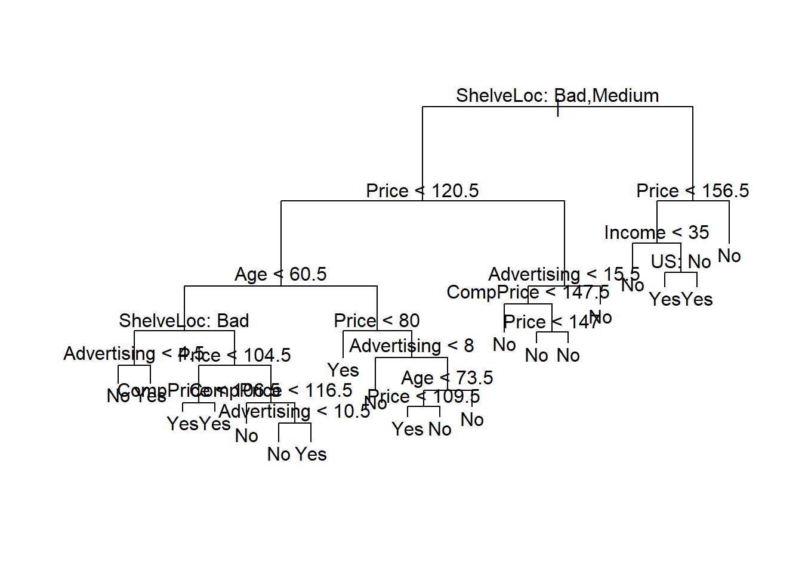
tree.pred <- predict(tree.carseats, Carseats[-train,], type = "class")
with(Carseats[-train,], table(tree.pred,High))## High
## tree.pred No Yes
## No 72 27
## Yes 18 33(72+33)/150## [1] 0.7This tree was grown to full depth, and might be too variable. We now use CV to prune it.
library(tree)
cv.carseats <- cv.tree(tree.carseats, FUN = prune.misclass)
cv.carseats## $size
## [1] 20 14 13 10 9 7 6 5 2 1
##
## $dev
## [1] 65 65 57 57 59 64 64 59 78 104
##
## $k
## [1] -Inf 0.000000 1.000000 1.333333 2.000000 2.500000 4.000000
## [8] 5.000000 9.000000 31.000000
##
## $method
## [1] "misclass"
##
## attr(,"class")
## [1] "prune" "tree.sequence"plot(cv.carseats)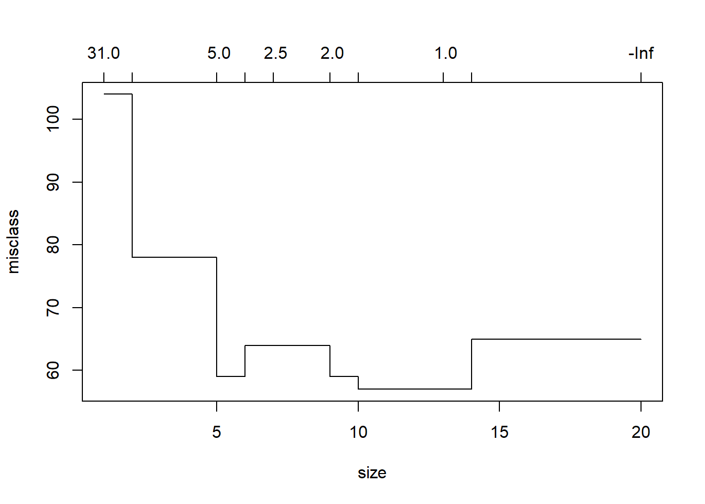
prune.carseats <- prune.misclass(tree.carseats, best=13)
plot(prune.carseats);text(prune.carseats, pretty=0)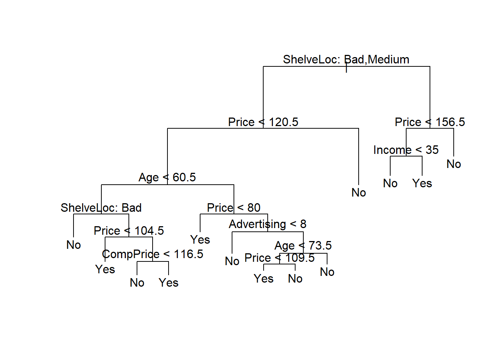
Now lets evaluate this pruned tree on the test data.
tree.pred <- predict(prune.carseats, Carseats[-train,], type="class")
with(Carseats[-train, ], table(tree.pred, High))## High
## tree.pred No Yes
## No 72 28
## Yes 18 32(72+32)/150## [1] 0.6933333It has done about the same as our original tree. So pruning did not hurt us wrt misclassification errors, and gave us a simpler tree.
Random Forests and Boosting
These methods use trees as building blocks to build more complex models. Here we will use the Boston housing data to explore random forests and boosting. These data are in the MASS package. It gives housing values and other statistics in each of 506 suburbs of Boston based on a 1970 census.
Random forests build lots of bushy trees, and then average them to reduce the variance.
library(randomForest)## randomForest 4.6-12## Type rfNews() to see new features/changes/bug fixes.library(MASS)
?Boston
dim(Boston)## [1] 506 14set.seed(101)
train <- sample(1:nrow(Boston), 300)Lets fit a random forest and see how well it performs. We will use the response medv, the median housing value (in $1K dollars)
rf.boston <- randomForest(medv ~ ., data = Boston, subset = train)
rf.boston##
## Call:
## randomForest(formula = medv ~ ., data = Boston, subset = train)
## Type of random forest: regression
## Number of trees: 500
## No. of variables tried at each split: 4
##
## Mean of squared residuals: 12.34243
## % Var explained: 85.09The MSR and % variance explained are based on OOB or out-of-bag estimates, a very clever device in random forests to get honest error estimates. The model reports that mtry=4, which is the number of variables randomly chosen at each split. Since \(p=13\) here, we could try all 13 possible values of mtry. We will do so, record the results, and make a plot.
oob.err <- double(13)
test.err <- double(13)
for(mtry in 1:13){
fit <- randomForest(medv ~., data=Boston, subset=train, mtry=mtry, ntree=400)
oob.err[mtry] <- fit$mse[400]
pred <- predict(fit, Boston[-train,])
test.err[mtry] <- with(Boston[-train,], mean((medv-pred)^2))
cat(mtry," ")
}## 1 2 3 4 5 6 7 8 9 10 11 12 13matplot(1:mtry, cbind(test.err,oob.err), pch=19, col=c("red","blue"), type="b", ylab="Mean Squared Error")
legend("topright", legend=c("OOB","Test"), pch=19, col=c("red","blue"))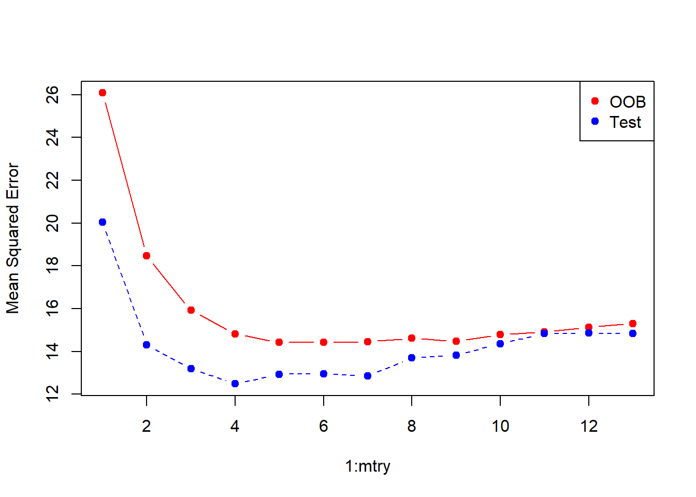
Not too difficult! Although the test-error curve drops below the OOB curve, these are estimates based on data, and so have their own standard errors (which are typically quite large). Notice that the points at the end with mtry=13 correspond to bagging.
Boosting builds lots of smaller trees. Unlike random forests, each new tree in boosting tries to patch up the deficiencies of the current ensemble.
library(gbm3)
boost.boston <- gbm(medv ~ ., data = Boston[train, ], distribution = "gaussian",
n.trees = 10000, shrinkage = 0.01, interaction.depth = 4)
summary(boost.boston)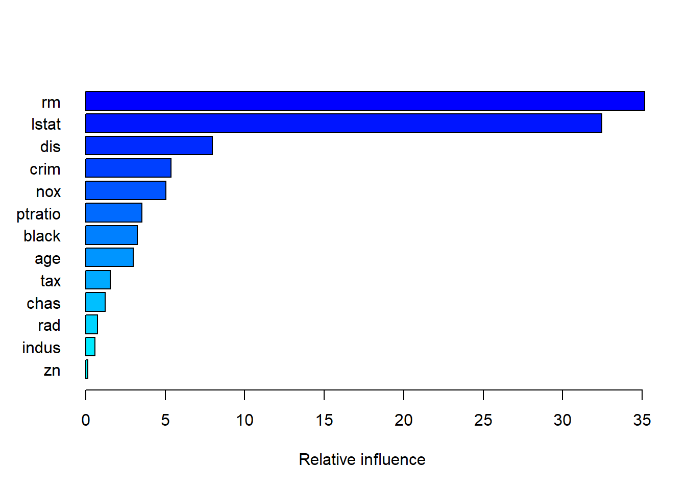
## var rel_inf
## rm rm 35.1573249
## lstat lstat 32.4749785
## dis dis 7.9656899
## crim crim 5.3735504
## nox nox 5.0503321
## ptratio ptratio 3.5460553
## black black 3.2374385
## age age 2.9799571
## tax tax 1.5512722
## chas chas 1.2211187
## rad rad 0.7399728
## indus indus 0.5820085
## zn zn 0.1203010plot(boost.boston, var_index = "lstat")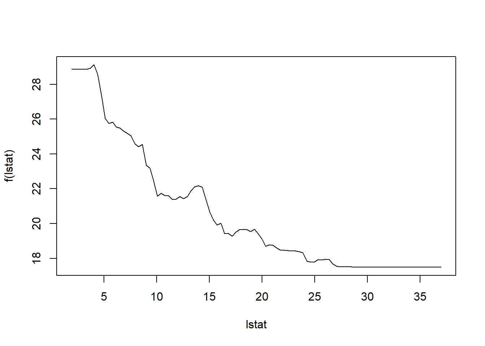
plot(boost.boston, var_index = "rm")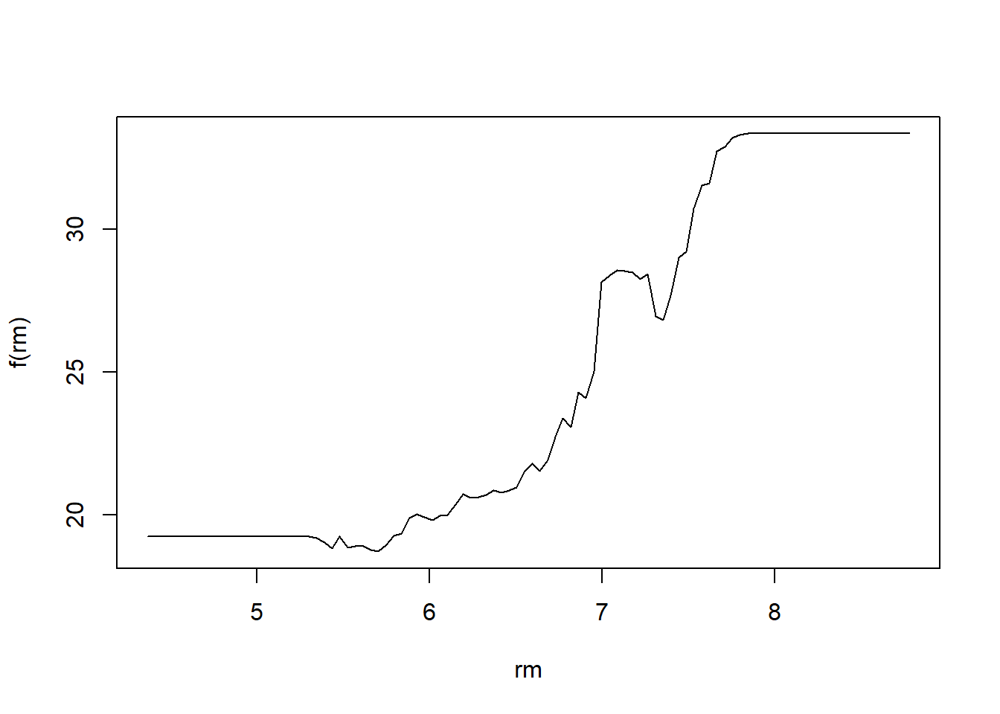
Lets make a prediction on the test set. With boosting, the number of trees is a tuning parameter, and if we have too many we can overfit. So we should use cross-validation to select the number of trees. We will leave this as an exercise. Instead, we will compute the test error as a function of the number of trees, and make a plot.
n.trees <- seq(from=100, to=10000, by=100)
predmat <- predict(boost.boston, newdata = Boston[-train, ], n.trees=n.trees)
dim(predmat)## [1] 206 100berr <- with(Boston[-train, ], apply((predmat-medv)^2,2,mean))
plot(n.trees, berr, pch=19, ylab="Mean Squared Error", xlab="# Trees", main="Boosting Test Error")
abline(h=min(test.err), col="red")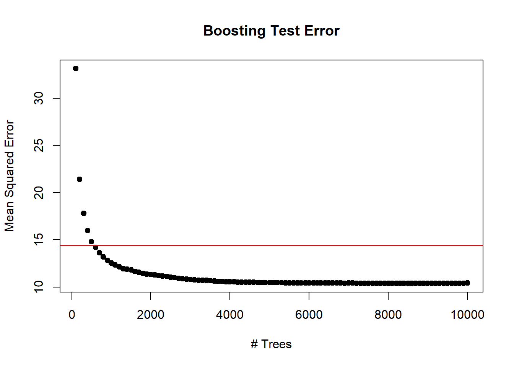